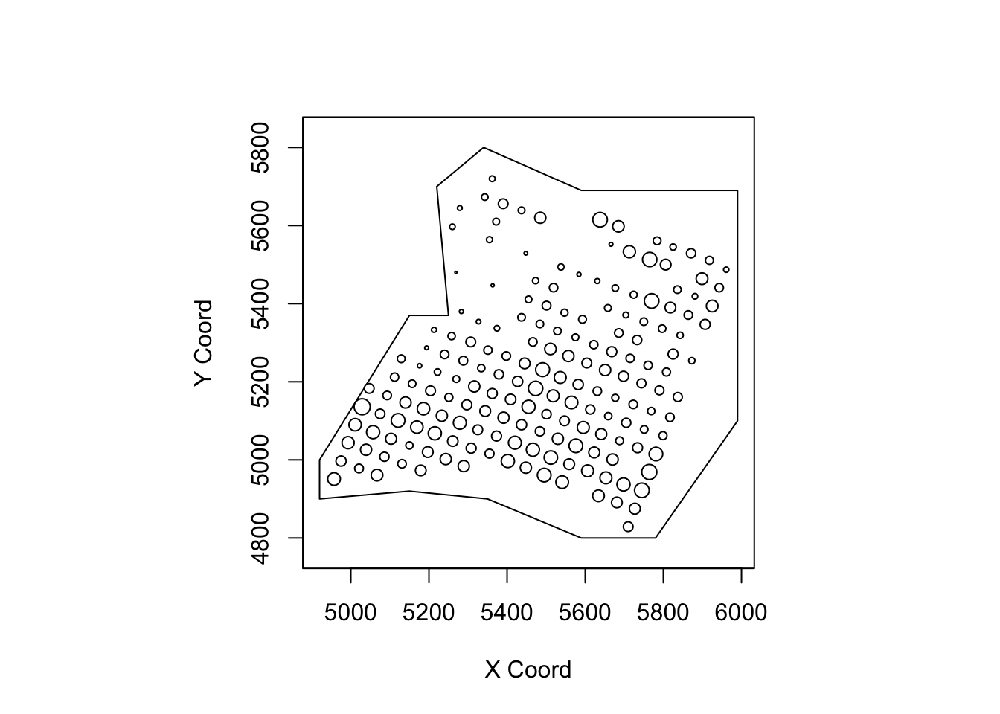

library(sp)
library(sf)## Linking to GEOS 3.8.0, GDAL 3.0.4, PROJ 6.3.1library(ggplot2)
oz_states = ozmaps::ozmap_states
ggplot(oz_states) +
geom_sf() +
coord_sf()
oz_votes = ozmaps::abs_ced
ggplot() +
geom_sf(data = oz_votes) +
coord_sf()lga = ozmaps::abs_lga
ggplot() +
geom_sf(data = oz_states, mapping = aes(fill = NAME), show.legend = FALSE) +
geom_sf(data = lga, fill = NA) +
coord_sf() All datasets are read into as SpatialPolygonsDataFrame
library(rgdal)
library(sp)
VICLGA = readOGR(dsn = "datasets/VICLGA/VIC_LOCALITY_POLYGON_shp.shp", "VIC_LOCALITY_POLYGON_shp")## Warning in OGRSpatialRef(dsn, layer, morphFromESRI = morphFromESRI, dumpSRS =
## dumpSRS, : Discarded datum Geocentric_Datum_of_Australia_1994 in CRS definition:
## +proj=longlat +ellps=GRS80 +towgs84=0,0,0,0,0,0,0 +no_defs## OGR data source with driver: ESRI Shapefile
## Source: "C:\Users\tingjinc\OneDrive - The University of Melbourne\Documents\GitFile\90122Lab\datasets\VICLGA\VIC_LOCALITY_POLYGON_shp.shp", layer: "VIC_LOCALITY_POLYGON_shp"
## with 92 features
## It has 10 fieldsVICSub = readOGR(dsn="datasets/VICSub/VIC_LOCALITY_POLYGON_shp.shp", "VIC_LOCALITY_POLYGON_shp")## Warning in OGRSpatialRef(dsn, layer, morphFromESRI = morphFromESRI, dumpSRS =
## dumpSRS, : Discarded datum Geocentric_Datum_of_Australia_2020 in CRS definition:
## +proj=longlat +ellps=GRS80 +towgs84=0,0,0,0,0,0,0 +no_defs## OGR data source with driver: ESRI Shapefile
## Source: "C:\Users\tingjinc\OneDrive - The University of Melbourne\Documents\GitFile\90122Lab\datasets\VICSub\VIC_LOCALITY_POLYGON_shp.shp", layer: "VIC_LOCALITY_POLYGON_shp"
## with 2973 features
## It has 12 fieldsMELLGA = readOGR(dsn = "datasets/Mel/Aus-Melbourne02.shp", "Aus-Melbourne02")## OGR data source with driver: ESRI Shapefile
## Source: "C:\Users\tingjinc\OneDrive - The University of Melbourne\Documents\GitFile\90122Lab\datasets\Mel\Aus-Melbourne02.shp", layer: "Aus-Melbourne02"
## with 32 features
## It has 14 fieldslibrary(raster)
library(mapview)
# Before crop, first check CRS
VICLGA@proj4string## CRS arguments:
## +proj=longlat +ellps=GRS80 +towgs84=0,0,0,0,0,0,0 +no_defsVICSub@proj4string## CRS arguments:
## +proj=longlat +ellps=GRS80 +towgs84=0,0,0,0,0,0,0 +no_defsMELLGA@proj4string## CRS arguments: +proj=longlat +datum=WGS84 +no_defs# Making all CRS the same
crs0 = VICLGA@proj4string
MELLGA = spTransform(MELLGA, crs0)
MELLGA@proj4string## CRS arguments:
## +proj=longlat +ellps=GRS80 +towgs84=0,0,0,0,0,0,0 +no_defs## Task 1
GMEL = MELLGA[1, ] # Greater Melbourne
GMELSub = crop(VICSub, GMEL)
#mapView(GMELSub)
## Task 2: this code takes a while to run.
#i = which(MELLGA$name == "City of Melbourne")
#CMEL = MELLGA[i, ]
#CMELSub = crop(VICSub, CMEL)
#mapView(CMELSub) There are more shapefiles in PlanMelbourne Folder, which can be downloaded from https://www.planmelbourne.vic.gov.au/maps/spatial-data
I have not explore all of shapefiles
It is quite useful.
The following gives regions of victoria and CBD
#setwd("C:/Users/tingjinc/Dropbox/1_MAST90122/2_Spatial_Lab/1_Visualisation_Lab2367")
#SReg = readOGR(dsn="2_ggplot/PlanMelbourne/Administrative/State Regions_region.shp", "State Regions_region")
#library(mapview)
#mapView(SReg)
#CBD = readOGR(dsn="2_ggplot/PlanMelbourne/Central City Urban Renewal and Precincts/Central Business District_region.shp", "Central Business District_region")
#mapView(CBD)